Instalación de laboratorio
NOTA: La instalación de gran parte de este laboratorio no es necesaria si se utiliza la aplicación Draeneg para capturar el tráfico de red. Si se usa dicha aplicación, basta con seguir las instrucciones para instalar Wireshark de este tutorial. Aquí el tutorial de uso de Draeneg.
En esta primera sección crearemos el laboratorio de análisis de aplicaciones móviles. El diagrama que seguiremos será el siguiente, con la diferencia que usaremos Wireguard en vez de OpenVPN:

Lo que haremos será lo siguiente: - Instalar un servidor de máquinas virtuales - Crear una máquina virtual con Ubuntu instalado - Instalar Wireguard en nuestro teléfono - Instalar WireGuard en Ubuntu - Instalar Wireshark y Tshark
Instalación de VirtualBox y VMWare
Lo primero que tenemos que hacer es instalar el software necesario para poder crear una máquina virtual. Una máquina virtual es, sencillamente, una computadora dentro de otra computadora. Esto nos permite, por ejemplo, correr el sistema operativo Linux en Windows (o viceversa) y, además, agrega una serie de beneficios de seguridad.
Es la manera más sencilla de construir nuestro laboratorio de análisis sin tener que modificar la instalación de nuestro sistema operativo principal y además permite hacerlo en MacOS, Windows o Linux. Debemos notar que en este tutorial nos enfocaremos en Windows y Linux.
Para poder crear una máquina virtual, se pueden usar varios programas, aquí recomendamos el uso de VirtualBox para Linux y de VMWare para Windows. (Para MacOs existe VMWare Fusion y Parallels). Los dos son gratuitos, aunque VMWare tiene una versión de paga.
Si bien se puede utilizar VMWare en Linux y VirtualBox en Windows, en nuestras pruebas, lo que más nos fucnionó, por cuestiones de velocidad y fluidez fue, como lo dijimos arriba, VirtualBox para Linux y VMWare para Windows.
Instalación de VirtualBox en Ubuntu
-
Para instalar virtualbox en Ubuntu (o cualquier sistema basado en Ubuntu como, Linux Mint, Linux Lite, Kubuntu, Lubuntu, etc.) ir a la consola y escribir:
sudo add-apt-repository multiverse && sudo apt-get updateEl primer comando add-apt-repository multiverse activa el repositorio de programas multiverse en Ubuntu. Esto lo que hace es permitir que, desde ese repositorio, se instalen programas.El segundo comando, sudo apt update, sirve para actualizar desde internet la información de los paquetes que se quieren instalar y las fuentes desde donde se van a instalar. Básicamente permite saber qué paquetes están desactualizados y evita que uno instale un paquete "viejo".
Es importante usar este comando siempre antes de instalar un programa nuevo. El comando sudo nos otorga privilegios temporales de administrador. En linux, por seguridad, hay comandos (acciones) que no se pueden ejecutar con los permisos que tiene un usuario corriente.
 - Con el siguiente comando instalaremos VirtualBox:
- Con el siguiente comando instalaremos VirtualBox:
$ sudo apt install virtualboxEste comando descargará los paquetes necesarios de instalación y ejecutará todos los procesos necesarios. En algún momento preguntará si se quiere continuar con la instalación. Dar enter o escribir Y.
Una vez realizada la instalación, para ejecutar VirtualBox, se puede poner el siguiente comando en la consola. ~~~ $ virtualbox ~~~ O simplemente se puede acceder al ícono de VirtualBox en la lista de programas y dar click.
También se puede instalar VirtualBox desde la Ubuntu Software App.
Instalación de VMWare en Windows
Nos hemos decantado por utilizar VMWare en Windows porque hemos encontrado varios problemas con VirtualBox. - Descargar el archivo ejectuable desde este enlace.
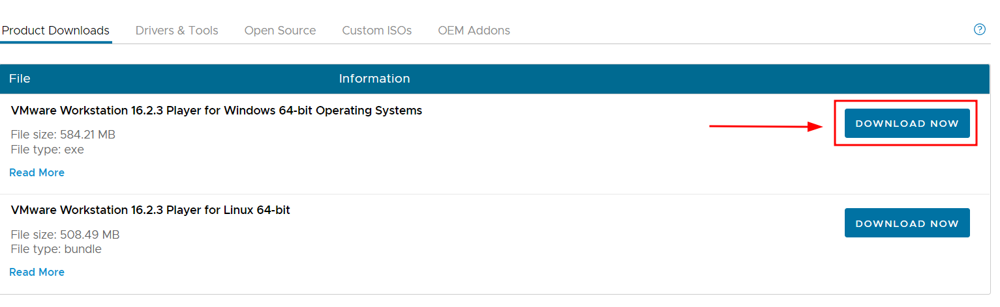 - Ir a la carpeta de descargas y dar doble click al archivo. Seguir las instrucciones de instalación.
Creación de la máquina virtual
Creación de una máquina virtual con Ubuntu en VirtualBox
Dejamos aquí el enlace al tutorial proporcionado por Ubuntu. Este tutorial sirve tanto si se tiene Linux o Windows como sistema operativo base.
- En resumen hay que hacer lo siguiente:
- Bajar una imagen de Ubuntu (recomendamos que sea la versión 20.04.4. La nueva versión, 22.04, tiene todavía varios problemas).
- Crear una máquina virtual
- Agregar la imagen de disco de Ubuntu
- Ejecutar la máquina virtual
- Instalar Ubuntu. Aquí el enlace al tutorial. Aunque en este tutorial dice que es a través de un USB, hay que seguir las instrucciones como se indican desde el punto número 4.
- Alternativamente, se puede descargar un disco virtual desde este enlace (Recomendamos descargar la versión 20.04.4, ya que la nueva, 22.04, tiene varios problemas todavía). Está la opción tanto para VirtualBox, como para VMWare.
 Lo que uno descarga aquí es básicamente el disco duro de una máquina virtual con la instalación ya hecha y configurada de Ubuntu. Como ya está instalado Ubuntu,
Lo que uno descarga aquí es básicamente el disco duro de una máquina virtual con la instalación ya hecha y configurada de Ubuntu. Como ya está instalado Ubuntu, - el nombre de usuario (username) es: osboxes
- y el password es: osboxes.org
- Descargar disco duro VDI del enlace anterior. El archivo está en formato .7z. Extraer con Winrar o 7zip. Si usted está en Linux, no hace falta instalar ninguno de estos dos programas.
-
Abrir VirtualBox y dar click en Nueva

-
Configurar la nueva máquina virtual. Ponerle un nombre; elegir la carpeta donde se guardará; elegir el tipo de sistema operativo: Linux; elegir versión de sistema operativo: Ubuntu (64-bit) y dar click en Next.
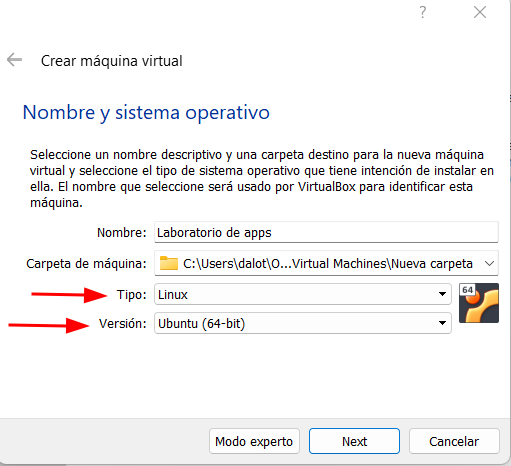
La visualización entre Linux y Windows puede cambiar un poco, pero es esencialmente la misma. - Elegir la cantidad de memoria RAM de la nueva máquina. Nosotros sugerimos 2GB si la computadora en la cual usted está trabajando tiene al menos 8GB de RAM. Si tiene menos, dejar 1GB, si tiene más poner 4GB. Dar click en Next.

- Seleccionar la opción Usar un archivo de disco duro virtual existente y dar click en la carpeta para abrir el explorador de archivos.
- Dar click en Añadir y seleccionar el archivo que bajamos en el paso número 1.

- Dar click en Crear y luego dar click en Iniciar con nuestra máquina virtual seleccionada del lado izquierdo.
 Puede tardar un poco, pero al final se verá la pantalla de bienvenida de Ubuntu.
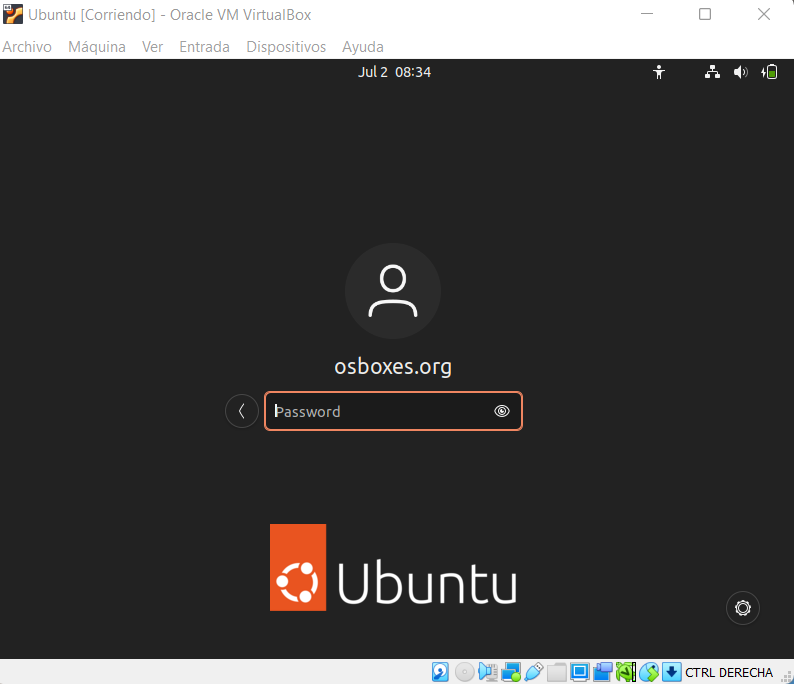
Puede tardar un poco, pero al final se verá la pantalla de bienvenida de Ubuntu.
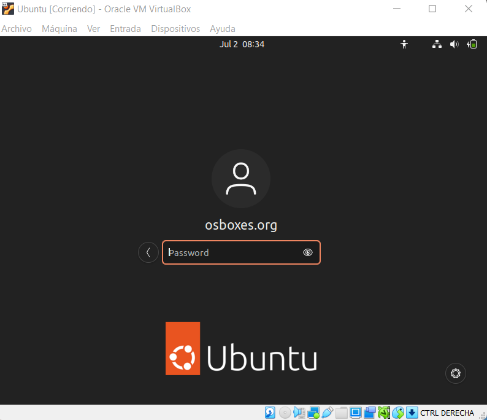
Configuración gráfica y de red de la máquina virtual
Ya sea que hayamos instalado Ubuntu desde cero o hayamos utilizado una imagen de Osboxes, estaremos corriendo Ubuntu en una máquina virtual. Antes de continuar tenemos que apagar la máquina para configurar el acceso a la red de la misma. Ir a:
Archivo -> Cerrar -> Apagar la máquina.
Hay tres opciones:
- Guardar estado de la máquina: esta opción cierra la máquina virtual pero mantiene el estado en el cual se encuentra, de tal manera que al volver iniciar la máquina, ésta estará prendida y con los programas corriendo.
- Enviar señal de apagado: esto es equivalente a apagar la computadora como normalmente lo hacemos.
- Apagar la máquina: esto es equivalente a apagarla como si dejáramos apretado el botón de apagado.
Por comodidad apagaremos la máquina con la última opción, ya que la segunda tarda un poco más de tiempo. Como vamos a modificar la configuración de la máquina, es necesaria apagarla por completo.
- Ir a configuración:
 - Ir a sistema y luego procesador. Poner que tenga dos núcleos de procesamiento.
- Ir a sistema y luego procesador. Poner que tenga dos núcleos de procesamiento.
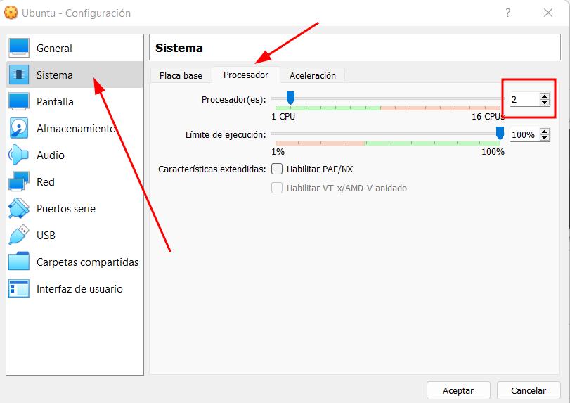
- Ir a pantalla y poner 128MB de video. Si se tiene una tarjeta dedicada de video, se recomienda activar la casilla de Aceleración.

- Ir a Red -> Adaptador 1 -> Conectado a: y seleccionar Adaptador Puente. esto permite que la máquina virtual forme parte de la red local.
- Dar Aceptar y luego Iniciar otra vez la máquina virtual. La máquina debería correr de manera más fluida y estar conectada a nuestra red local.
Creación de una máquina virtual con Ubuntu en VMWare
El proceso es muy similar al de VirtualBox que detallamos con anterioridad.
-
Bajar imagen de disco de Ubuntu
-
Abrir VMWare y dar click en Create a New Virtual Machine 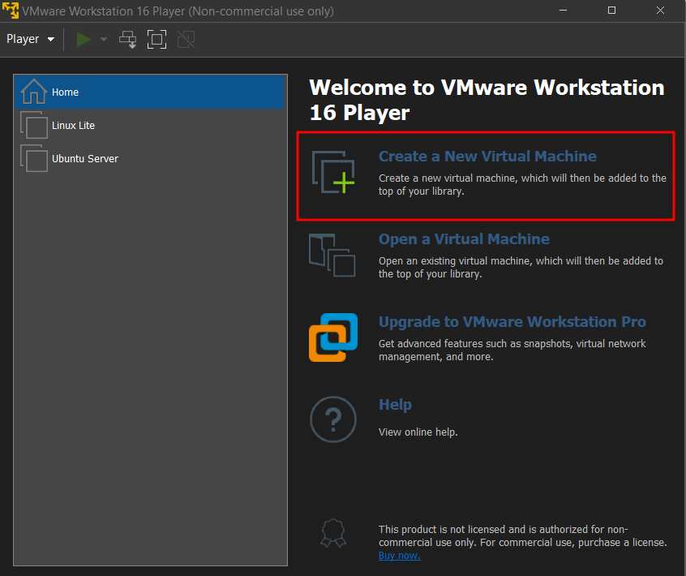
-
Seleccionar Installer disc image (iso) y luego dar click en Browse y seleccionar la imagen que se bajó en el paso anterior. Dar click en Next 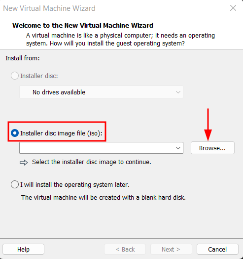
VMWare tiene una función que se llama Easy Install. Esta función permite que, si el sistema operativo de la máquina que se quiere crear está soportado, se instale todo de manera más sencilla y se configure de manera automática. En este caso, Ubuntu está soportado, así que simplemente hay que seguir las instrucciones
-
Rellenar los campos de Full Name (no tiene que ser el real); username; Password y Confirm (volver a introducir el password) y dar click en Next.

-
Poner el nombre de la máquina virtual y seleccionar dónde se guardará en el disco duro. Dar click en Next.

-
Seleccionar tamaño del disco. Recomendamos, por instrucciones de Ubuntu, que sea mínimo 25GB. Dar click en Next. .
- En la siguiente imagen dar click en Finish.
- Aparecerá el siguiente mensaje. Dar click en OK
You are running this virtual machine [...]
- Después de esto, se instalará Ubuntu de manera automática. Puede tardar bastante tiempo. Al finalizar este proceso, nos recibirá la pantalla de bienvenida de Ubuntu. Dar click en el usuario y rellenar el password que seleccionamos. 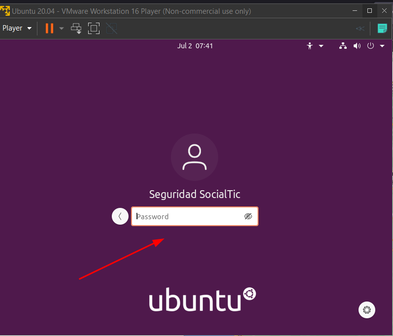
- Ahora podemos expandir la ventana de la máquina virtual y aceptar o modificar las diferentes recomendaciones que nos hace Ubuntu.
No haremos un tutorial de cómo importar una imagen de disco de OSBoxes ya que el procedimiento de instalación es bastante sencillo, pero dejamos aquí un enlace.
Configuración de red de la máquina virtual
-
Apagamos la máquina virtual. Para ello vamos a Player -> Power -> Shut Down Guest y aceptamos el diálogo que nos aparece.
-
Iniciamos VMWare de nuevo. Y vamos a editar configuración de la máquina virtual. Recordar siempre seleccionar del lado izquierdo la máquina. 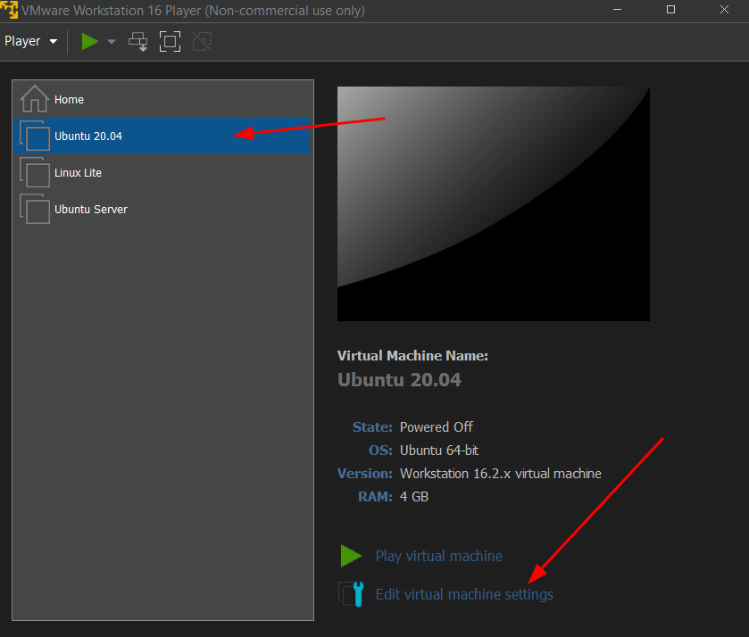
-
Vamos a Network Adpater y seleccionamos, bajo Network Connection, la opción de Bridged, luego le damos OK. 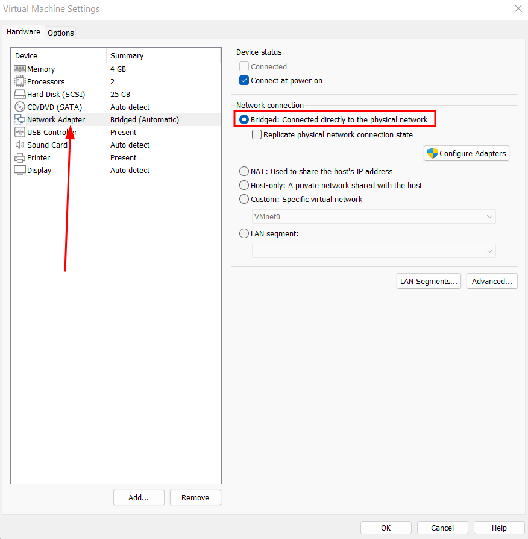 Hacemos esto para que nuestra máquina se conecte a nuestra red como si fuera otro dispositivo más. Si escogemos la opción de NAT, entonces pondrá a nuestra máquina virtual en una subred de nuestra máquina física, lo cual complica las cosas.
-
Volvemos a iniciar la máquina y nos aparecerá una advertencia nueva:

Le damos Aceptar y dentro de poco se iniciará nuestra máquina virtual como antes. -
De ahora en adelante, para apagarla, lo mejor es simplemente ir a Player -> Power -> Suspend. La razón de haberla apagado por completo antes es porque si uno no hace eso, no se pueden modificar las configuraciones de la máquina virtual.
Instalación de Wireguard
Wireguard es un protocolo de red privada virtual (VPN) y el código para poder ejecutar ese protocolo. Si bien es mucho más conocido OpenVPN, nos hemos decidido por utilizar WireGuard porque es más sencillo de instalar y requiere menos modificaciones post instalación para utilizarse.
Por motivos de facilidad, instalaremos WireGuard a través de un script (una serie de comando que se ejecutan de manera automática). Si bien no recomendamos ejecutar scripts desde internet por motivos de seguridad, hemos revisado el script que recomendamos y no tiene ningún código malicioso. En todo caso, si algún usuario quisiera hacerlo todo a mano, dejamos aquí un enlace con un tutorial.
Antes de instalar WireGuard en el Ubuntu de nuestra máquina virtual, tenemos que instalarlo en nuestro celular Android.
-
Entramos a la PlayStore, ponemos WireGuard en la barra de búsqueda y le damos Instalar. 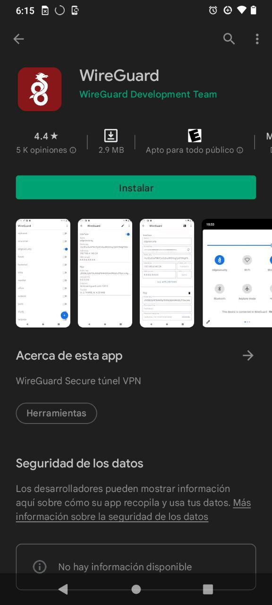
-
Cuando finalice, le damos Abrir.
-
Nos aparece la siguiente pantalla. Por lo mientras, dejamos el celular ahí.

-
Ir a la terminal de Ubuntu (Todo lo que sigue se hace dentro la máquina virtual). Para esto, dar click en el recuadro de la esquina inferior izquierda y luego en el ícono de la terminal.

-
En la terminal escribir el siguiente comando:
ip a
Este comando nos muestra información sobre las conexiones de red de nuestra máquina virtual, y sobre las interfaces desde las que se hacen estas conexiones. Una interfaz de red es el nombre que le asigna Ubuntu al dispositivo por el cual nos estamos conectando a internet o a una red local. Puede ser una interfaz virtual (como en nuestra máquina virtual) o física, nuestra tarjeta de red WIFI o Ethernet. En este caso veremos dos interfaces: La primera no nos interesa, pero la segunda (ens33) es la manera en la cual nuestra máquina virtual tiene acceso a internet. En la imagen, además, está subrayada la ip local. Una ip local es una dirección de red que se le asigna a todos los dispositivos conectados al módem de nuestra casa. Nuestra computadora tiene una, y nuestra máquina virtual, otra diferente. Nuestro celular, si está conectado a nuestro WiFi, tiene otra. Digamos que estas direcciones ip locales son la manera de nombrar a nuestros diferentes dispositivos. **Hay que tomar nota del nombre de la segunda interfaz (en este caso es: ens33) y de nuestra ip local (en este caso es: 192.168.37.133). El nombre de la interfaz y la ip local puede variar.
- Una vez anotado lo anterior, ponemos este comando en la terminal:
sudo apt update && sudo apt install git
El primer comando actualiza los repositorios desde donde se instlan los programas, y el segundo comando instala el comando (programa) git. Este comando permite bajar desde github otros programas. Aquí lo utilizaremos para bajar el script de instalación de WireGuard. Cuando pida el password, poner el que se usa para iniciar sesión. Cuando pregunte si se quiere continuar, dar simplemente enter.
- Una vez instalado Git, procederemos a bajar el script. Lo hacemos con el siguiente comando.
git clone https://github.com/angristan/wireguard-install
Este comando clona (baja) el repositorio que se encuentra en la URL que escribirmos.
- Ahora entramos a la carpeta que acabamos de bajar.
cd wireguard-install
- Adentro de esta carpeta, tenemos que hacer que el script que bajamos, tenga permisos para ejecutarse y así podamos correrlo. Esto en Linux se hace con el siguiente comando:
chmod +x wireguard-install.sh
Aquí se explican cómo funcionan los permisos. Lo que hicimos con este comando fue agregar al archivo el permiso de ejecución, este permiso en Linux es el "x". Por eso se pone +(agregar)x(permiso de ejecución).
- Ahora ejecutamos el script. Para hacerlo necesitamos ejecutarlo como administrador. De ahí que agreguemos el comando sudo.
sudo ./wireguard-install.sh
- Lo primero que hace el script es avisarnos que nos hará una serie de preguntas de configuración.
IPv4 or IPv6 public address: 192.168.37.133
La dirección ip debería corresponder con la que anotamos anteriormente. Dar enter.
- Luego nos pregunta:
Public interface: ens33
Una vez más, el nombre de la interfaz debería coincidir con aquella que anotamos con anterioridad. Dar enter.
- Después nos pregunta el nombre que le queremos dar a la interfaz desde la cual se va a conectar WireGuard.
WireGuard interface name: wg0
Recomendamos dejar el nombre sugerido y dar enter.
- Luego nos pregunta la ip local que va a tener el servidor de WireGuard. Como ya vimos, cada interfaz de red, tiene su propia dirección ip.
Server's WireGuard IPv4: 10.66.66.1
Recomendamos dejar la dirección sugerida y dar enter.
- Actualmente existen dos tipos de direcciones ip. la Ip versión cuatro, y la Ip versión 6. Así que también se le tiene que asignar una dirección Ip versión 6 (IPv6) a nuestra interfaz.
Server's WireGuard IPv6: fd42:42:42::1
Recomendamos dejar la dirección sugerida y dar enter.
- Cada interfaz de red y sus direcciones Ip, pueden tener diferentes servicios corriendo en ellas. Se puede tener, por ejemplo, HTTPS (que es como accedemos a las páginas Web, y ese servicio corre en el puerto 8080), o IMAP, que es donde accedemos a nuestros correos (los puertos estándar son 993 o 143). Para identificar cada servicio que corre en una misma Ip, le asignamos un puerto. Como WireGuard es un servicio, hay que asignarle un puerto.
Server's WireGuard port [1-65535]: 49259
Recomendamos dejar el puerto sugerido y dar enter.
- Luego nos pregunta por el DNS (Domain Name System). Aquí hay una explicación por parte de uno de los más grandes a nivel mundial CloudFlare.
First DNS resolver to use for the clients: 94.140.14.14
El servidor DNS que estamos configurando se llama AdGuard. Sugerimos dejarlo como está, pero es importante anotar la dirección Ip. Dar enter.
- Los servidores DNS tienen por lo general dos Ip's.
Second DNS resolver to use for the clients (optional): 94.140.15.15
Dar enter y volver a dar enter.
- Ahora nos preguntará por el nombre del cliente. Nosotros instalamos el servidor de WireGuard en nuestro Ubuntu, ahora vamos a configurar el cliente (nuestro celular) para que pueda conectarse al servidor.
Client name: socialtic
Se puede poner el nombre que uno quiera. Dar enter.
- El cliente tiene que tener una dirección Ip también.
Client's WireGuard IPv4: 10.66.66.2
Recomendamos dejar la dirección sugerida y dar enter.
- El cleintecliente también tiene que tener una dirección Ipv6.
Client's WireGuard IPv6: fd42:42:42::2
Recomendamos dejar la dirección sugerida y dar enter.
-
Ahora nos aparecerá un código QR en la pantalla. (Si no se ve completo, expandir la terminal).

-
Agarrar el celular y dar click en el signo de + y luego en Escanear desde código QR.

-
Aceptar el permiso de Fotos y Videos
- Rellenar nombre (puede ser el que sea)
- Click en Crear Tunel
-
Conectar apretando en el círculo.
-
Aceptar la Solicitud de conexión
-
Listo, ya estamos conectados a nuestro servidor WireGuard. De ahora en adelante, todo el tráfico de red que mandemos y recibamos desde internet, pasará antes por nuestro servidor. Esto, por supuesto, nos permitirá capturarlo y analizarlo.
Instalación de Wireshark y Tshark
Ahora instalaremos dos programas. Uno se llama Wireshark. Es un programa que nos permitirá analizar el tráfico de red. El otro, Tshark, es como Wireshark, pero sin la interfaz gráfica. Utilizaremos el segundo para capturar el tráfico de red y el primero para analizarlo. Vamos otra vez a la terminal en nuestra máquina virtual.
- Ejecutar el siguiente comando:
sudo apt install wireshark
Como ya sabemos, esto instalará el programa de Wireshark.
A la mitad de la instalación nos preguntará lo siguiente:
 Nosotros sugerimos la configuración estándar y darle no.
Nosotros sugerimos la configuración estándar y darle no.
- Una vez que termine la instalación (que también se puede hacer desde la Ubuntu Software App), ejecutar el siguiente comando para instalar Tshark.
sudo apt install tshark
¡Listo, ya terminamos de configurar nuestro laboratorio!